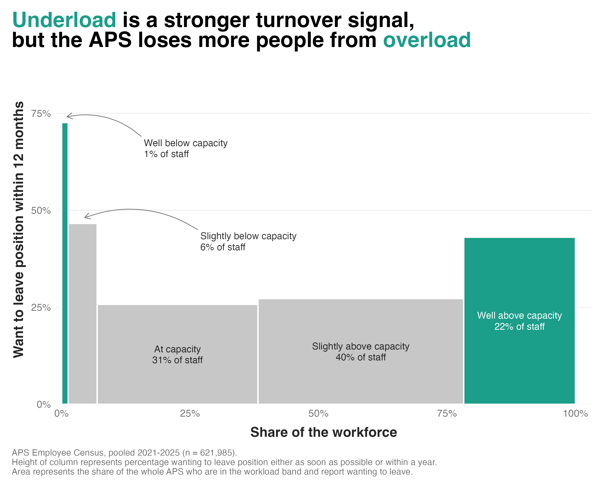

Workload is one of the first things people raise when they talk about leaving a job. But too much and too little work can both be problematic. I looked into the influence of workload on turnover intention using data from the Australian Public Service (APS) Employee Census, an annual survey of workers across Australian government agencies, with more than 130,000 employees responding each year.
The figure below shows data from 2021 to 2025. Each bar is a workload band, from well below capacity to well above. The width is how common that level is, and the height is the percentage in that band who want to leave within 12 months. So the area of a bar reflects the share of the whole Australian Public Service who are in that workload band and want to leave.

Here's what I found:
1) Australian public service workers are stretched. 62% of the workforce reports having a workload that exceeds their capacity, with 22% of staff saying they're well above it. This is shown by the width of the bars.
2) It's actually underload that's the stronger driver of intentions to leave. Among those who report being well below their capacity, 73% say they plan to leave their position within 12 months. Among those reporting that they're well above capacity, only 43% say they plan to leave. This is shown by the height of the bars.
3) But overload is still where the APS is losing the most people. Only around 1% of the workforce are well below capacity, while far more are well above it. Those who are above capacity account for 64% of everyone who wants to leave within a year. Those who are below capacity only account for about 11% of this group. This is shown by the area of the bars. The well-below-capacity bar is tall but narrow, so it adds little, while the wide above-capacity bars carry more weight.
It's clear why overload relates to turnover intentions. Too much work brings unsustainable demands and increases burnout risk. But the fact that underload is also a turnover driver indicates that it's not about minimising work. It's about finding (or providing) work that's stimulating and lets people use their skills.
There's also a broader lesson here about where to focus effort. If an organisation targeted only the highest-risk group (those well below capacity), even a 100% effective retention intervention would only cut overall turnover by a small amount, simply because that group is so small. The bigger opportunity is tackling overload, precisely because so many more people are affected by it.